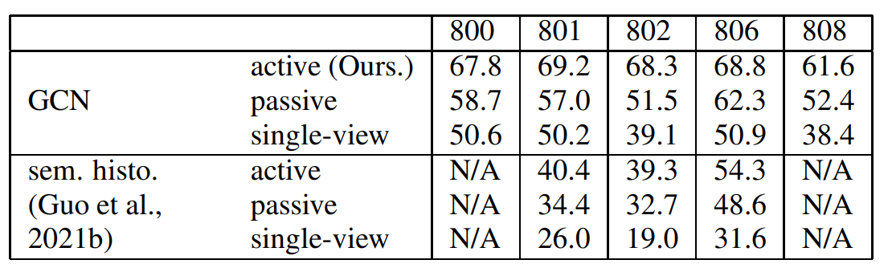

Topological maps are increasingly favored in robotics for their cognitive relevance, compact storage, and ease of transferability to human users. While these maps provide scalable solutions for navigation and action planning, they present challenges for tasks requiring fine-grained self-localization, such as object goal navigation. This paper investigates the action planning problem of active self-localization from a novel perspective: can an action planner be trained to achieve fine-grained self-localization using coarse topological maps? Our approach acknowledges the inherent limitations of topological maps; overly coarse maps lack essential information for action planning, while excessively high-resolution maps diminish the need for an action planner. To address these challenges, we propose the use of egocentric topological maps to capture fine scene variations. This representation enhances self-localization accuracy by integrating an output probability map as a place-specific score vector into the action planner as a fixed-length state vector. By leveraging sensor data and action feedback, our system optimizes self-localization performance. For the experiments, the de facto standard particle filter-based sequential self-localization framework was slightly modified to enable the transformation of ranking results from a graph convolutional network (GCN)-based topological map classifier into real-valued vector state inputs by utilizing bag-of-place-words and reciprocal rank embeddings. Experimental validation of our method was conducted in the Habitat workspace, demonstrating the potential for effective action planning using coarse maps.
Figure 1: Topological navigation using ego-centric topological maps. Left: Conventional world-centric map. Right:The proposed ego-centric map.
Figure 2: Scene parsing. Left: SGB (Tang et al., 2020). Right: Ours.
Figure 3: Seven spatially adjacent input images along the robot trajectory and their bag-of-words representation: The graph shows the time difference of bag-of-words histogram h[t](t = 1,2,3,4,5,6,7) of viewpoint sequence of length 7. ∆h[t]=h[t +1]−h[t](t=1,2,3,4,5,6). Among the elements of ∆h[t], three visual words with small absolute values of time difference are chosen, and their prototype ego-centric topological maps are shown in the figure.
Figure 4: Experimental environments.
Table1：Performance results.
Figure 5: Time cost per sense-plan-acition cycle. A: Preprocessing. B: Particle filter. C: Action planning. D: Planner retraining.
Figure 6: Examples of L repetitions of sense-plan-action cycles.